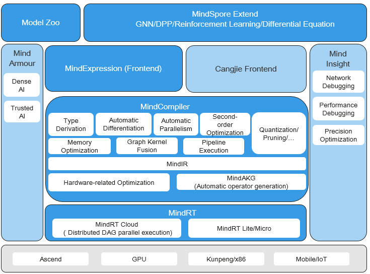

Overall Architecture¶
Linux Windows Ascend GPU CPU On Device Model Development Model Optimization Framework Development Intermediate Expert Contributor

MindSpore is a deep learning framework in all scenarios, aiming to achieve easy development, efficient execution, and all-scenario coverage. Easy development features include API friendliness and low debugging difficulty. Efficient execution includes computing efficiency, data preprocessing efficiency, and distributed training efficiency. All-scenario coverage means that the framework supports cloud, edge, and device scenarios.
The following figure shows the overall MindSpore architecture, which mainly consists of four parts: MindSpore Extend, MindExpression (ME), MindCompiler and MindRT.
MindSpore Extend: MindSpore expansion package, which is expected to be contributed and built by more developers.
MindExpression: Python-based frontend expression. In the future, more frontends based on C/C++ and Java will be provided. Cangjie, Huawei’s self-developed programming language frontend, is now in the pre-research phase. In addition, Huawei is working on interconnection with third-party frontends such as Julia to introduce more third-party ecosystems.
MindCompiler: The core compiler of the layer is mainly based on the unified MindIR of the end cloud to achieve three major functions, including hardware-independent optimization (type inference, automatic differentiation, expression simplification, etc.), hardware-related optimization (automatic parallelism, memory optimization, graph kernel fusion, pipeline execution, etc.), deployment and inference-related optimizations (quantization, pruning, etc.); MindAKG is MindSpore’s automatic operator generation compiler, which is still being continuously improved.
MindRT: all-scenario runtime, which covers the cloud, device, and smaller IoT scenarios.
